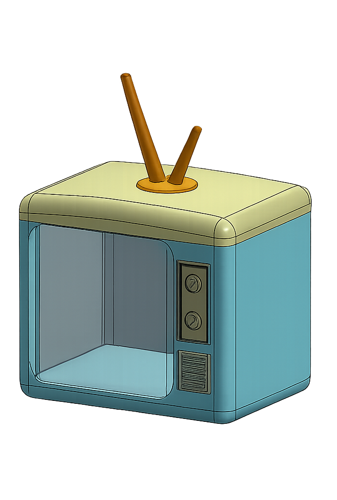

Seçili kişisel çalışmalar
Merakla başlayan; tasarım, üretim ve dijital dünyayı bir araya getiren kişisel denemeler.

Retro televizyon formundan ilham alan, tasarım ve üretim odaklı kişisel çalışma.
İllüstrasyon, hikâye anlatımı ve kodlama estetiğini buluşturan görsel deney.